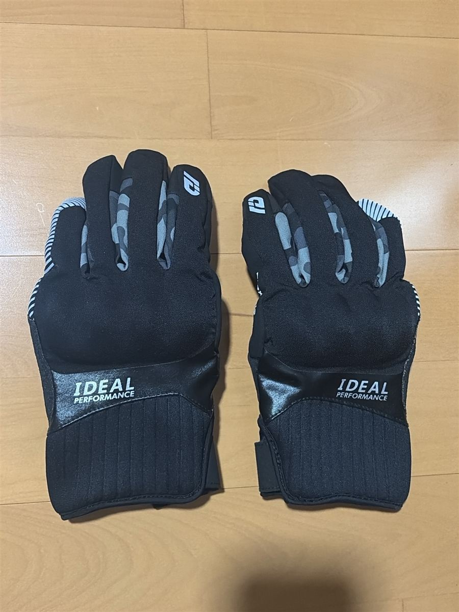
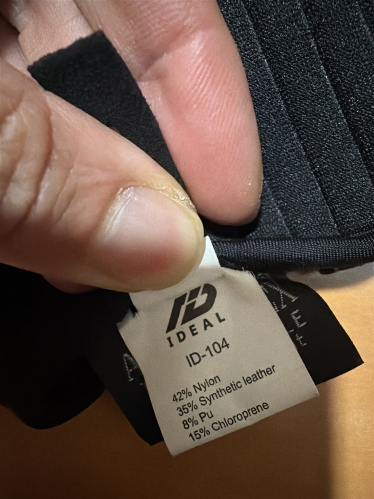

冬用グローブ（筆者使用）
IDEAL（アイディール）プロテクションウインターグローブ ID-104 TENDER（ブラックカモ）


冬用のバイクグローブです。販売ページによると、保温性と柔軟性があり撥水性も備えた人工ダウン素材「プリマロフト」を使っています。指先はスマートフォンを操作できる「IDEAL TIP」、手の甲にはインナータイプのナックルプロテクター、側面にはソフトプロテクターと、小指側面のリフレクター（反射材）が付いています。
【筆者のおすすめ】バイクは、グリップヒーターと組み合わせると快適です。
Yahoo!で見る![[商品価格に関しましては、リンクが作成された時点と現時点で情報が変更されている場合がございます。]](https://hbb.afl.rakuten.co.jp/hgb/594466ea.60a20559.594466eb.94c693fc/?me_id=1234456&item_id=27554714&pc=https%3A%2F%2Fthumbnail.image.rakuten.co.jp%2F%400_mall%2Fwebike-rb%2Fcabinet%2F1761%2F642356_1761.jpg%3F_ex%3D240x240&s=240x240&t=picttext "[商品価格に関しましては、リンクが作成された時点と現時点で情報が変更されている場合がございます。]")

![[商品価格に関しましては、リンクが作成された時点と現時点で情報が変更されている場合がございます。]](https://hbb.afl.rakuten.co.jp/hgb/59445871.f9d4f18c.59445872.44283bb1/?me_id=1268912&item_id=17475959&pc=https%3A%2F%2Fthumbnail.image.rakuten.co.jp%2F%400_mall%2Fg-bike%2Fcabinet%2Fecimg%2F29092%2F1496055-2909292.jpg%3F_ex%3D240x240&s=240x240&t=picttext "[商品価格に関しましては、リンクが作成された時点と現時点で情報が変更されている場合がございます。]")